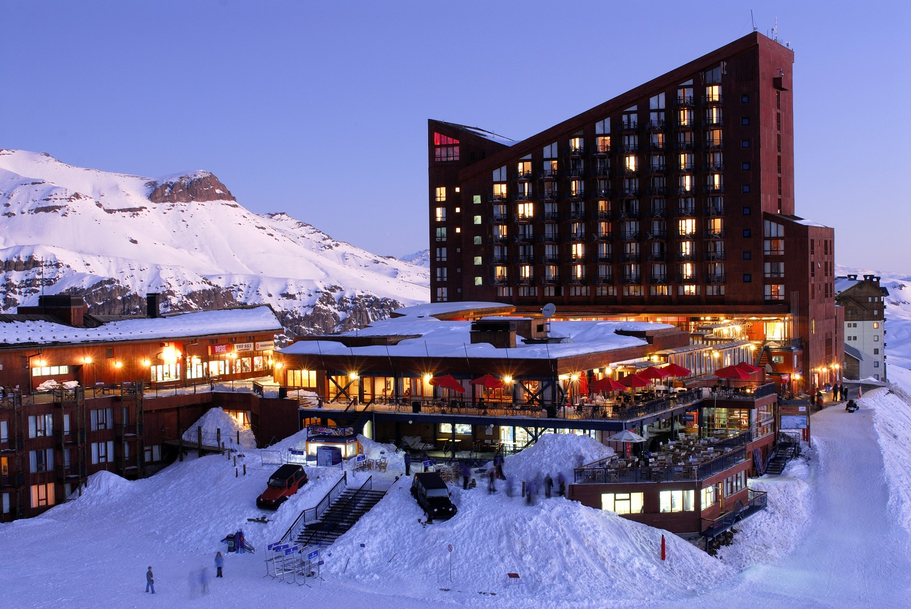
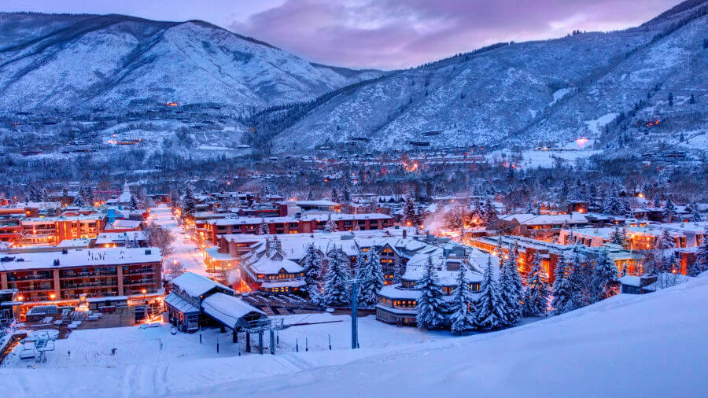
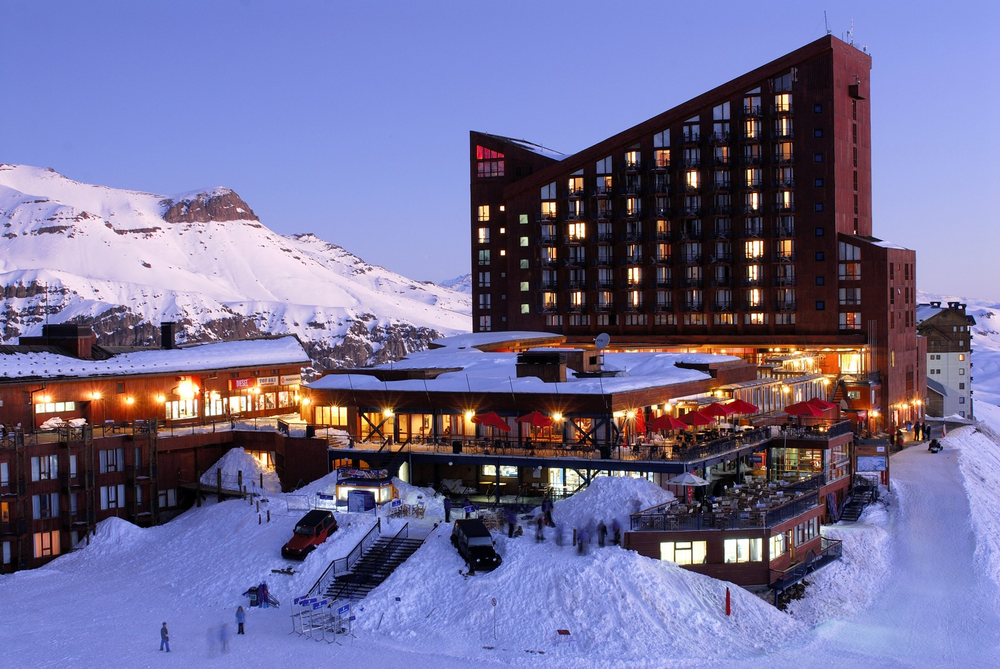
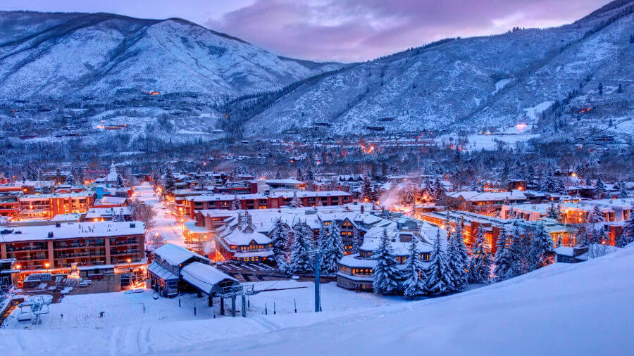
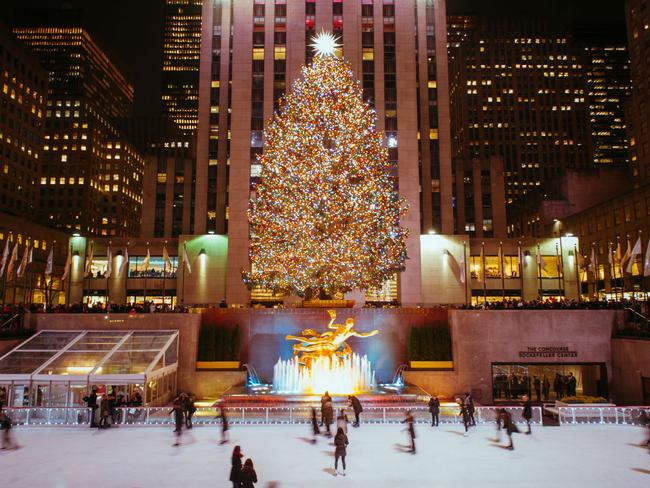
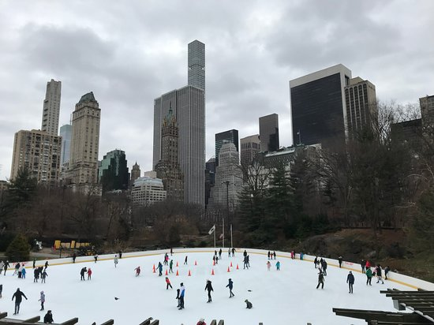

Ama neve assim como eu?
Então se liga nas dicas.
 



Em primeiro lugar colocamos uma das cidades mais queridinhas do mundo... já sabe qual é?
Se você apostou em Nova York, meus parabéns, você acertou.
Nova York conta com várias atrações e lugares incríveis para visitar.
Uma das atrações preferidas dos norte americanos é a patinação no gelo. A pista mais utilizada é a do Central Park, que possui uma linda vista. Outro lugar muito conhecido é a Quinta Avenida, que possui uma pista montada em frente ao Rockefeller Center.
-



Chile é o segundo lugar de nossa lista.
Chile conta com alguns meses de neve.
A temporada de neve começa na segunda quinzena de junho e vai até a primeira quinzena de setembro.